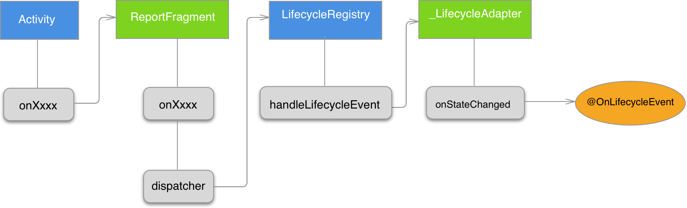

Architectural principles
- you should not store any app data or state in your app components and your app components should not depend on each other.
- drive your UI from a model, preferably a persistent model.
handling the lifecycle properly such that your data streams pause when the related LifecycleOwner is stopped and the streams are destroyed when the LifecycleOwner is destroyed. You can also add the android.arch.lifecycle:reactivestreams artifact to use LiveData with another reactive streams library
Lifecycle
Lifecycle 是 Android Architecture Components 的一个组件，用于将系统组件（Activity、Fragment等等）的生命周期分离到 Lifecycle 类，Lifecycle 允许其他类作为观察者，观察组件生命周期的变化。Lifecycle 用起来很简单，首先声明一个 LifecycleObserver 对象，用 @OnLifecycleEvent 注解声明生命周期事件回调的方法：
public class LifecycleObserverDemo implements LifecycleObserver {
@OnLifecycleEvent(Lifecycle.Event.ON_ANY)
void onAny(LifecycleOwner owner, Lifecycle.Event event) {
System.out.println("onAny:" + event.name());
}
@OnLifecycleEvent(Lifecycle.Event.ON_CREATE)
void onCreate() {
System.out.println("onCreate");
}
@OnLifecycleEvent(Lifecycle.Event.ON_DESTROY)
void onDestroy() {
System.out.println("onDestroy");
}
}
然后在 LifecycleRegistryOwner 比如 LifecycleActivity 加入这么一行代码：
getLifecycle().addObserver(new LifecycleObserverDemo());
然后？然后就没了，运行起来可以看到 LifecycleActivity 的生命周期发生变化时，LifecycleObserverDemo 总能得到通知。而 LifecycleActivity 只有寥寥几行代码，并没有覆盖任何回调方法。那么 Lifecycle 是怎么做到的，是不是有点黑魔法的感觉？
注解的作用
首先从注解入手，可以在 build 目录下发现注解处理器为我们生成了 LifecycleObserverDemo_LifecycleAdapter，不过这只是一个适配器，用于将生命周期事件派发到 LifecycleObserverDemo 对应的方法。
public class LifecycleObserverDemo_LifecycleAdapter implements GenericLifecycleObserver {
final LifecycleObserverDemo mReceiver;
LifecycleObserverDemo_LifecycleAdapter(LifecycleObserverDemo receiver) {
this.mReceiver = receiver;
}
@Override
public void onStateChanged(LifecycleOwner owner, Lifecycle.Event event) {
mReceiver.onAny(owner,event);
if (event == Lifecycle.Event.ON_CREATE) {
mReceiver.onCreate();
}
if (event == Lifecycle.Event.ON_START) {
mReceiver.onStart();
}
if (event == Lifecycle.Event.ON_PAUSE) {
mReceiver.onPause();
}
if (event == Lifecycle.Event.ON_DESTROY) {
mReceiver.onDestroy();
}
}
public Object getReceiver() {
return mReceiver;
}
}
如何传达 lifecycle 事件
比较好奇，Activity 不用写任何代码，那么 Lifecycle 是如何把 Activity 生命周期事件传递给 LifecycleObserver?最终通过研读 Lifecycle 的代码，发现里面有个包可见的类 LifecycleDispatcher，LifecycleDispatcher 是一个单例，在 LifecycleDispatcher#init(Context) 中，它通过 registerActivityLifecycleCallbacks 方法，向当前的 Application 注册一个 DispatcherActivityCallback，但 Lifecycle 并没使用 ActivityLifecycleCallbacks 来监听并派发生命周期事件。
static void init(Context context){
...
((Application)context.getApplicationContext()).registerActivityLifecycleCallbacks(new LifecycleDispatcher.DispatcherActivityCallback());
...
}
static class DispatcherActivityCallback extends EmptyActivityLifecycleCallbacks {
public void onActivityCreated(Activity activity, Bundle savedInstanceState) {
...
if(manager.findFragmentByTag("android.arch.lifecycle.LifecycleDispatcher.report_fragment_tag") == null) {
manager.beginTransaction().add(new ReportFragment(), "android.arch.lifecycle.LifecycleDispatcher.report_fragment_tag").commit();
manager.executePendingTransactions();
}
}
}
而是通过一个无 UI 的 Fragment，在 DispatcherActivityCallback#onActivityCreated 可以看到它在 Activity#onCreate 时，为 Activity 添加一个 ReportFragment。最终由 ReportFragment 来监听各个生命周期事件，然后传递给 LifecycleRegistry。
public class ReportFragment extends Fragment {
...
public void onPause() {
super.onPause();
dispatch(Event.ON_PAUSE);
}
...
private void dispatch(Event event) {
if(this.getActivity() instanceof LifecycleRegistryOwner) {
((LifecycleRegistryOwner)this.getActivity()).getLifecycle().handleLifecycleEvent(event);
}
}
}
Activity 的生命周期事件都会派发到它的 Fragments，向 Activity 注册一个无 UI 的 Fragment 用于将各种 Activity 回调分离出来是个常用的做法，比如 RxPermissions 也是用这种方法来避免复写 Activity#onRequestPermissionsResult。
顺便一提 Lifecycle 文档提到：
ON_CREATE, ON_START, ON_RESUME events in this class are dispatched after the LifecycleOwner’s related method returns. ON_PAUSE, ON_STOP, ON_DESTROY events in this class are dispatched before the LifecycleOwner’s related method is called.
正好是 Fragment 生命周期回调的触发顺序。
终于 Activity 的生命周期变化是如何传递到 LifecycleObserver 有了清晰的图表：

LifecycleRuntimeTrojanProvider
还有一个问题， LifecycleDispatcher#init(Context) 并不是入口，它也需要被调用。那么他的调用者是谁？Google 这里的做法还是很巧妙的，如果这时把 apk 的 AndroidManifest.xml 提前，就会发现多了一个 ContentProvider 声明：
<provider
android:name="android.arch.lifecycle.LifecycleRuntimeTrojanProvider"
android:authorities="${applicationId}.lifecycle-trojan"
android:exported="false"
android:multiprocess="true" />
LifecycleRuntimeTrojanProvider，运行时木马是什么鬼？实际上，它不是一个 ContentProvider，而是利用 ContentProvider 的特点在应用程序初始化时，向其注入两行代码：
LifecycleDispatcher.init(getContext());
ProcessLifecycleOwner.init(getContext());
这里 ContentProvider 之于 Application 的作用就类似于无 UI Fragment 之于 Activity 一样，目的都是避免继承系统组件。关于 ContentProvider 的生命周期可以看 android - ContentProvider destruction/lifecycle - Stack Overflow，
其他 LifecycleOnwer
最后再提一下，Lifecycle 还提供了内置了另外三个 LifecycleOnwer：
- LifecycleFragment
- LifecycleService，ServiceLifecycleDispatcher 将事件派发重新推到主线程消息队列，用于保证确保回调在 Service 生命周期回调后再调用。
- ProcessLifecycleOwner，用于监听整个应用的前后台切换。也是利用 ActivityLifecycleCallback 监听每个 Activity 的生命周期，如果 onStop 事件后，没有监听到任意的 onStart 事件，那么 ProcessLifecycleOwner 就会认为整个应用切换到后台，同时留下一个标志。如果监听到 onStart 事件，同时检查有标志那么就会认为应用回到前台。
LiveData
不太适合用于网络请求这种只有单一事件的序列？
Lifecycle 事件小于 STARTED 对 LiveData 来说是 inactive。
LiveData 与 Databinding
现在这两个框架融合的不是很好，在 MVVM 中还是 Databinding 比较好用。
LiveData 与 Retrofit
网络接口是一次性的，而 LiveData 是一个值随时间变化的序列，似乎不太搭，
Retrofit 用 LiveData 用了他的 Lifecycle aware 的作用，防止泄露。
用 CallAdapter.Factory 来转换 LiveData
ViewModel
两个问题让 UI Controller(Activities、Fragments…) 变得巨大且难以维护
- 在 destroy 的时候清理异步回调。
- react to user actions or handle the operating system communication.
ViewModel，
- retain its state across Activity configuration changes
- outlives the specific Activity or Fragment instances.
- stay in memory until the Lifecycle it’s scoped to goes away permanently，Activity, once it finishes; in the case of a Fragment, once it’s detached.
- it shouldn’t reference any Views directly inside of it or hold reference to a context. This can cause memory leaks.
- If the ViewModel needs an Application context (e.g. to find a system service), it can extend the AndroidViewModel
ViewModel 的实现生命是由框架自己管理，所以不能交给 Dagger 注入。
那么只能注入 ViewModel 本身。
Dagger Android
Dagger Android 对系统组件的注入做了优化，当如果采用 Android 架构，系统组件会尽可能的薄，大部分需要注入的对象都不会放在系统组件。这对于大部分对象来说并没有问题。当对于 ViewModel 来说就有问题了。
ViewModel 对象的生命周期是由 Architecture Component 直接管理的。所以不能依靠 Dagger 去自动注入。下面这行代码是跑不了的：
viewModel = ViewModelProviders.of(this).get(MainViewModel.class);
所以要实现对 ViewModel 最佳实践还是得用 AndroidInjector。实现 AndroidInjector 注入并不困难。照着实现下面四个类变行：
- AndroidViewModelInjection
- AndroidViewModelInjectionModule
- HasViewModelInjector
- ViewModelKey
但是有个很大的限制，按照 AndroidInjection 的实现，ViewModel 必须有办法找到他的 Injector。 ViewModel 不能保存期宿主（Activity,Fragment）的引用，所以 ViewModel 的 Injector 只能是 Application。因为 ViewModel 是跨越 Activity/Fragment 生命周期的存在，所以一定程度上也是有道理的。拥有 Application 引用的 ViewModel。框架已经帮我们实现好了，就是 AndroidViewModel。
ViewModel 的 scope 应该大于或独立于 Activity 或 Fragment
但是不支持 @ContributesAndroidInjector 注解。
另一种注解
利用 ViewModelProvider.NewInstanceFactory 保持 Application 引用在外部进行注解。
IO
Kotlin
Android Architecture Components
- LifeCycle
- Live Data
- ViewModel
- Room
Android O
Supported Libraries
- font xml/ downloadable font
- up to api 14+ remove methods
sfa
Romm
- 如何对已有的数据库进行映射
- 如何对数据库名是变量名的数据进行映射